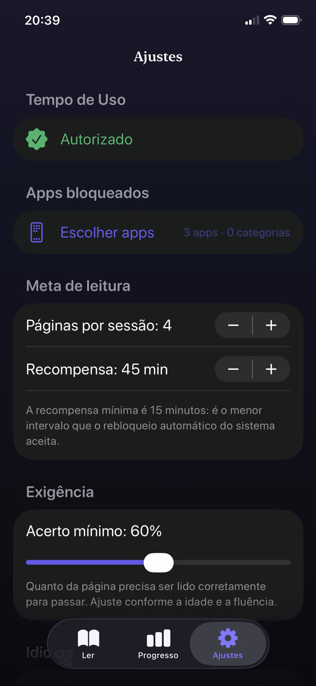
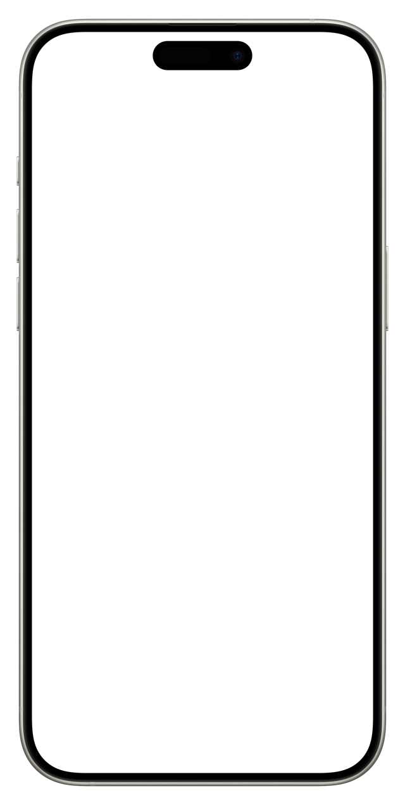

Esse detalhe de projeto explica por que o conselho de sempre rende pouco. Um limite que depende de alguém decidir parar está lutando contra um sistema feito para que essa decisão nunca precise existir.


Por que limites de tempo sozinhos rendem pouco
Um teto diário parece certo, mas na prática a criança gasta a cota num único puxão e depois pede mais. Não há nenhum momento dentro da experiência que sugira uma pausa, então o limite sempre chega como interrupção de fora.
Pior: quando o limite chega, nada o substitui. Tédio não é plano. É o que faz valer a pena procurar o contorno.
O que realmente reduz a atração
- Que abrir custe alguma coisa. Não um castigo, um preço: dez minutos de leitura compram a sessão. O toque por reflexo agora tem um passo na frente.
- Matar o hábito da reprodução automática na origem. Desative a reprodução automática no app do YouTube e ative os lembretes de pausa. O efeito é pequeno, mas não custa nada.
- Bloquear também a versão web. Bloquear o app enquanto o Safari abre o site não é limite, é desvio.
- Que o telefone durma em outro cômodo. A maioria das queixas sobre feeds é, na verdade, queixa sobre hora de dormir.
- Manter a regra idêntica todo dia. Regras previsíveis deixam de ser pessoais. As variáveis viram negociação diária.
Como conversar sobre isso sem dar sermão
As crianças ouvem «telas fazem mal para você» como opinião sobre o gosto delas, e descontam. Funciona muito melhor a honestidade sobre o projeto: esses apps são feitos por engenheiros muito bons cujo trabalho é tornar difícil parar, e ganhar deles é genuinamente difícil.
Esse enquadramento transforma tudo num problema compartilhado em vez de um defeito de caráter. Você não está acusando ninguém de fraqueza: está entregando uma ferramenta para uma briga justa.
Colocar um livro na frente do feed
É isso que o Guardian Reader faz mecanicamente. YouTube, TikTok, Instagram ou qualquer outro app que você escolher fica bloqueado atrás do sistema Tempo de Uso da Apple. Para abrir, seu filho lê em voz alta uma página de um livro físico e o app confere a leitura antes de liberar os minutos conquistados.
Funciona porque o pedágio é pequeno, honesto e difícil de contornar na conversa. Não há com quem discutir: a página precisa ser lida em voz alta antes de os minutos aparecerem.
O problema da reprodução automática, resolvido de fora
O feed infinito nunca termina sozinho, então o fim precisa vir do sistema. Quando os minutos conquistados expiram, o Guardian Reader bloqueia os apps de novo automaticamente, mesmo com o app fechado e o telefone no bolso do seu filho. Sem contagem regressiva para discutir, sem pedido de mais cinco minutos.